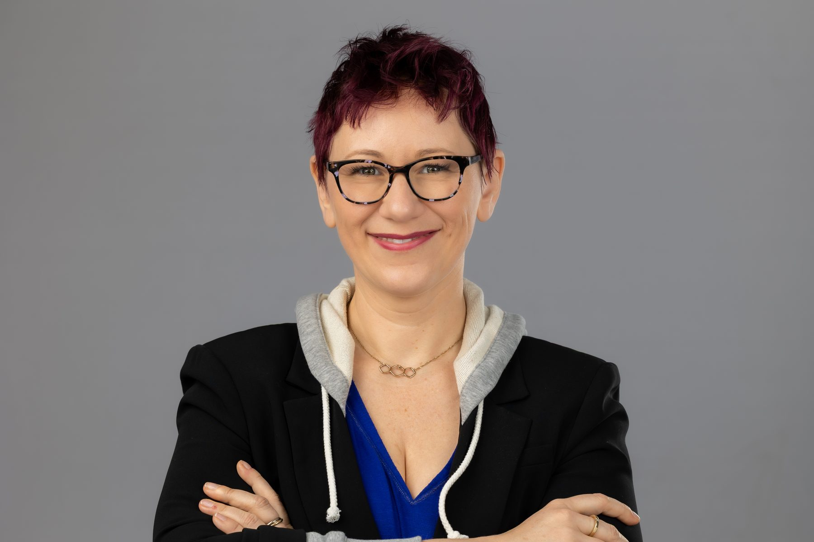

Impact that lasts
Lasting change lives at the intersection of people, processes, and technology. The work: advancing education, unlocking careers, and making sure more people have access to both.
I am a technology leader, scientist, and systems thinker.
My career has taken me from genetics research and academia to leadership roles in global technology organizations. Along the way, I have remained fascinated by a common question: how do complex systems create meaningful outcomes?
Whether studying biological systems, building teams, or leading organizational transformation, I have found that sustainable progress rarely comes from optimizing individual parts in isolation. It comes from understanding relationships, identifying patterns, and creating environments where people and ideas can thrive.
Today, I serve as Vice President of Platform Next at Autodesk, where I work with teams across the organization to do something deceptively hard. Forty years of growth left us with a platform that's powerful but difficult to navigate: too many services, too much friction, too little coherence. AI is the rare moment when that complexity can actually be made to disappear. My job is to seize it — which, in a company this size, means knowing when to work the system and when to go around it.
Beyond my professional role, I am passionate about mentorship, community building, and creating greater opportunities for women in technology and leadership. Through initiatives such as #PassTheMic and my engagement with the Constructor University community, I seek to amplify diverse perspectives and support the next generation of leaders.
At the heart of my work is a simple belief: meaningful change happens when people, technology, and purpose come together.

My Philosophy
Lasting change lives at the intersection of people, processes, and technology. The work: advancing education, unlocking careers, and making sure more people have access to both.
Creating environments where disagreement is welcomed, data speaks, and curiosity is contagious. Places where teams can experiment, be wrong, and thrive.
The paths that matter most aren't always the loudest ones. Always looking for the person who hasn't had the stage yet — and making room for their leadership and growth.
B.Sc. Jacobs University → M.Sc. Imperial College London → Ph.D. Cornell University
Cancer, genetics, and population genomics research
Leadership roles spanning operations, strategy, and transformation
Leading organizational and platform transformation at Autodesk
Former President, Constructor University Alumni Association · Former President, Constructor University Foundation of America · Advocate for women in STEM